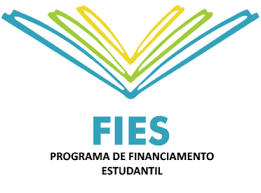

O FIES foi criado para democratizar o acesso ao ensino superior no Brasil, promovendo inclusão social e permitindo que estudantes, que não poderiam arcar com os custos de uma universidade particular, tenham a chance de ingressar no ensino superior. Ele oferece condições de pagamento facilitadas, taxas de juros reduzidas (ou até mesmo zero, dependendo da modalidade) e longos prazos para quitação.
A Pontifícia Universidade Católica (PUC), reconhecida pela excelência acadêmica e formação de qualidade, é uma das instituições participantes do FIES. O programa permite que alunos estudem em diversos cursos oferecidos pela PUC, com o financiamento parcial ou integral das mensalidades, dependendo da renda familiar do estudante. O objetivo dessa parceria é ampliar o acesso ao ensino superior de qualidade, oferecendo oportunidades para jovens talentos ingressarem na universidade. Na PUC, os alunos financiados pelo FIES têm acesso às mesmas condições acadêmicas que os demais, participando de uma estrutura de ensino de alta qualidade, com professores qualificados e infraestrutura moderna. Essa parceria visa formar profissionais competentes e preparados para contribuir com a sociedade.
→ Ter participado de alguma edição do ENEM a partir de 2010 e obtido nota mínima de 450 pontos na média das provas, além de nota maior que zero na redação. → Comprovar renda familiar per capita de até três salários mínimos.
→ Entre no site oficial da PUC ou do FIES e confira quais cursos estão habilitados para financiamento na instituição.
→ Acesse o site oficial do programa (fies.mec.gov.br) durante o período de inscrição. → Preencha os dados solicitados e escolha a PUC como instituição de ensino desejada.
→ Após a aprovação do financiamento, finalize o processo diretamente com a PUC, apresentando os documentos solicitados e formalizando sua matrícula.
O FIES é uma grande oportunidade para quem deseja estudar em uma universidade renomada como a PUC, mas não tem condições financeiras de arcar com os custos integrais. Aproveite essa possibilidade, organize seus documentos e fique atento aos prazos de inscrição para garantir sua vaga. Se ainda restar alguma dúvida, consulte a central de atendimento do FIES ou entre em contato diretamente com a PUC para obter mais informações!